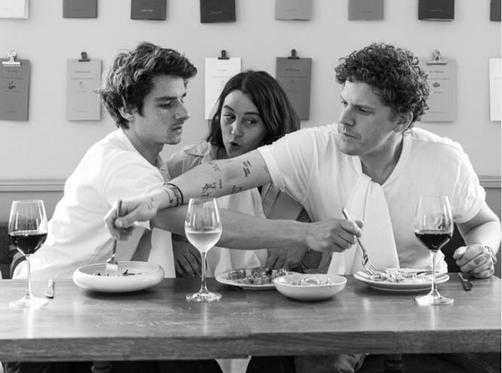

Qui somme-nous?
Manon Cazes, Martin Lafont et Jean-Marie Perrot, la petite trentaine, composent le trio de choc de Panaille. Ils ont fait leurs classes dans de grandes institutions et aux côtés de chefs de renom (Etchebest, Jégo, Pic pour ne citer qu'eux), ont voyagé, brainstormé, goûté, testé…bref ils ont bourlingué et largement fait leurs preuves avant de se poser à Bordeaux pour notre plus grand bonheur !

Martin, Manon, et Jean-Marie
Ils parlent de nous !

Camille in Bordeaux
Ici on mange très bien, les menus du jour changent toutes les semaines, le cadre est très cosy et l'équipe adorable.Gault&Millau
Un lieu qui leur ressemble, décomplexé et dans la bonne tendance d'une cuisine simple de produits locaux.
Le guide Michelin
L'assiette, réglée au cordeau, navigue entre recettes plutôt traditionnelles et incursions voyageuses